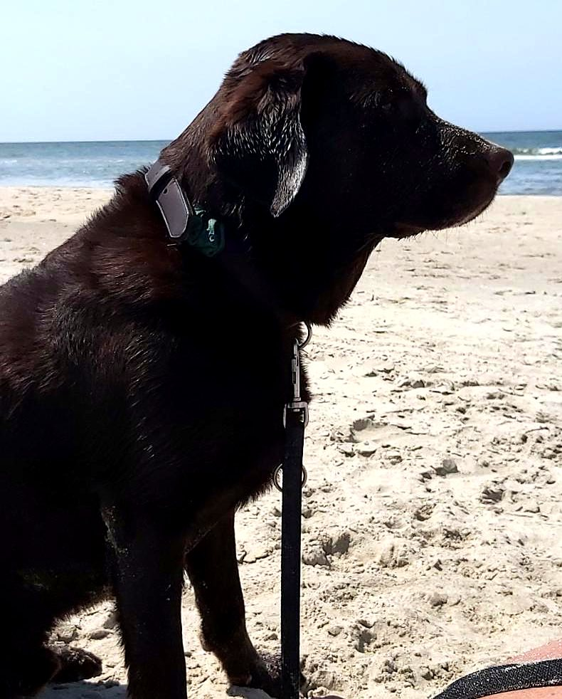
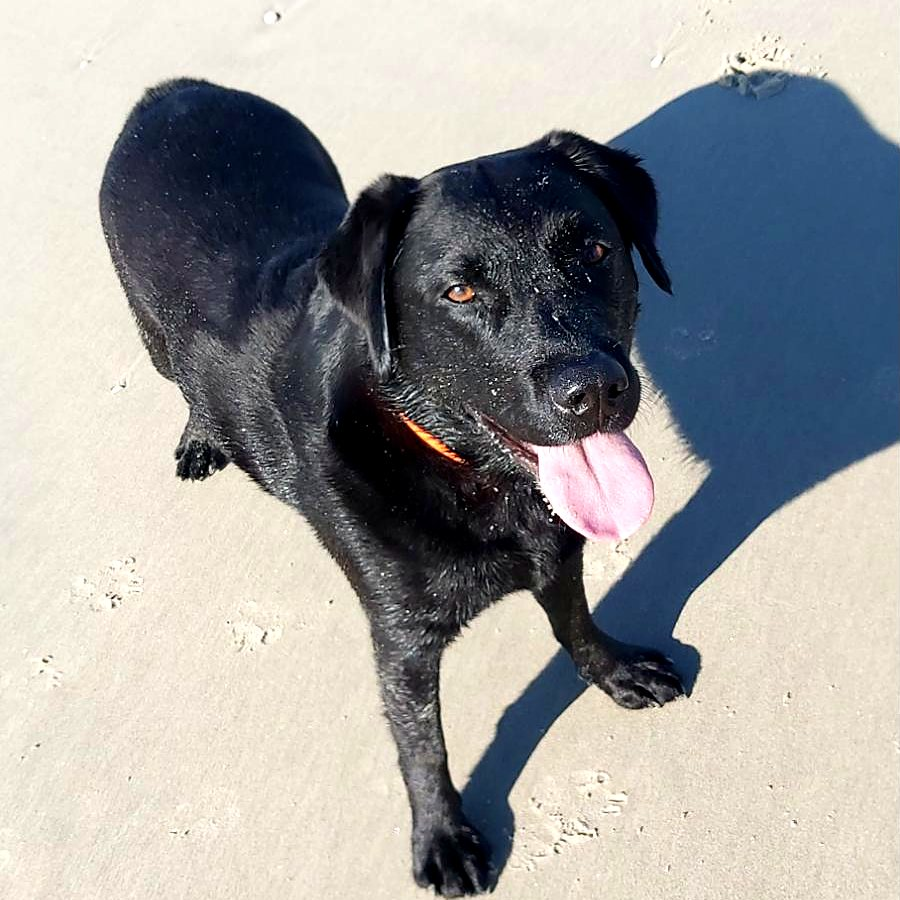
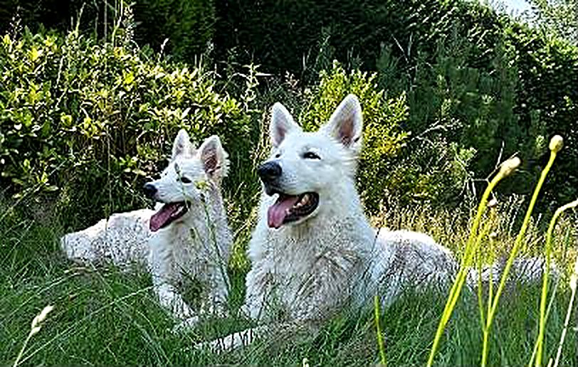
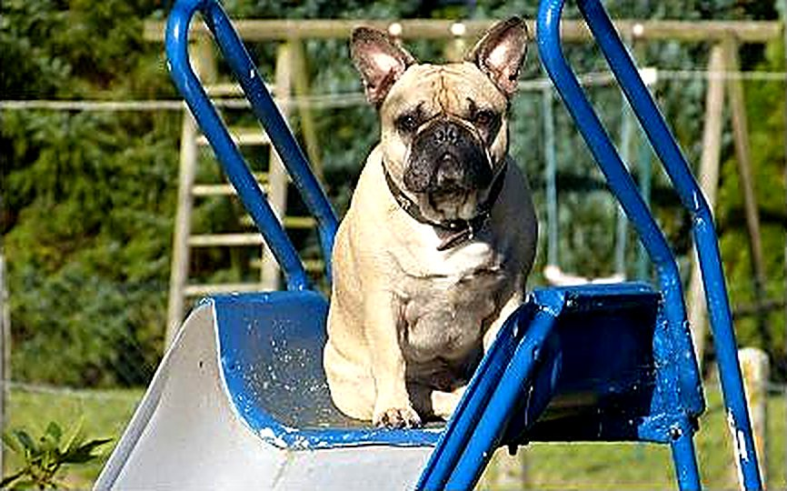
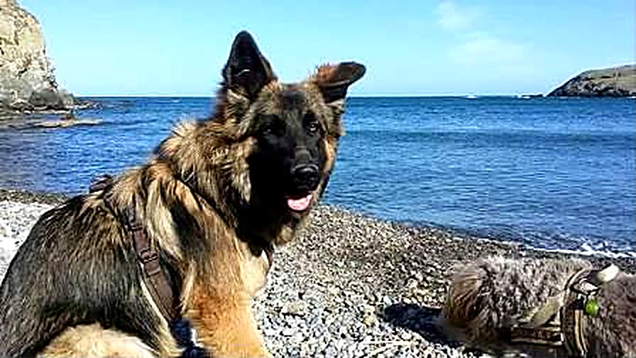
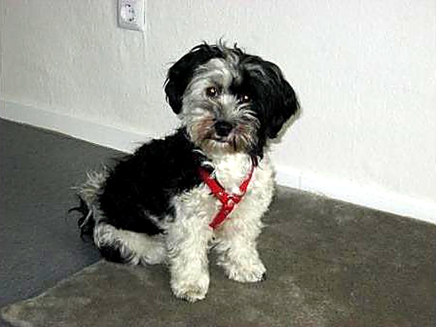
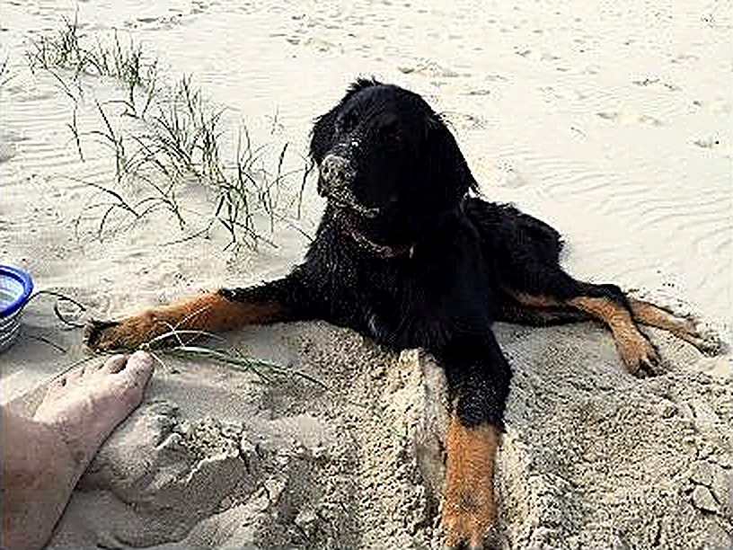
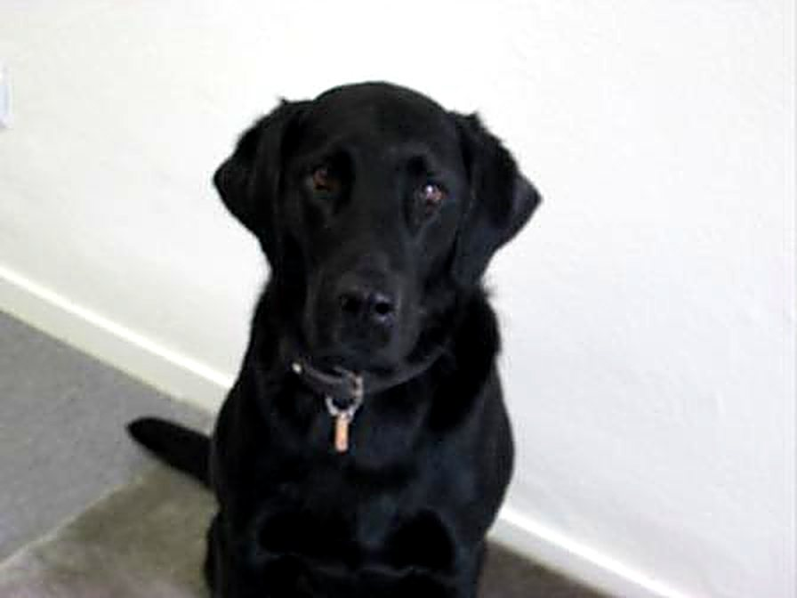

Mehr Beweglichkeit und Lebensqualität für Ihren Hund
Physiotherapie, Massage und Akupunktur – ergänzt durch Hunde-Psychologie, Homöopathie und Bachblüten. Mit Zeit, Ruhe und einem Blick auf den ganzen Hund.
- Hundephysiotherapie seit 2012
- Termine in Ruhe, nach Vereinbarung
- In Zusammenarbeit mit Ihrem Tierarzt

Behandlung und Begleitung, die zu Ihrem Hund passt
Wählen Sie einen Bereich, um mehr über Ablauf, Einsatzgebiete und Methoden zu erfahren.
Hunde-Physiotherapie
Schmerzlinderung, Beweglichkeit und Muskelaufbau – nach Operationen, bei Lähmungen und Gelenkerkrankungen.
Mehr erfahrenMassage & Akupunktur
Gezielte Massagetechniken und Akupunktur gegen Verspannungen und Schmerzen am Bewegungsapparat.
Mehr erfahrenErkrankungen
Arthrose, Cauda equina, Spondylose und weitere Krankheitsbilder, die ich behandle – mit typischen Anzeichen.
Mehr erfahrenHomöopathie
Den Hund im Ganzen sehen: Ursachen suchen statt nur Symptome zu behandeln.
Mehr erfahrenHunde-Psychologie
Verhalten verstehen, Zusammenhänge zwischen Verhalten und Erkrankungen erkennen.
Mehr erfahrenBachblüten
Eine sanfte Methode bei Angst, Unsicherheit, Stress oder Trauer – nach genauer Analyse.
Mehr erfahrenGeräte & Methoden
Stepper, Trampolin, Interferenz- und Low-Level-Lasertherapie in meiner Praxis.
Mehr erfahren
So kommen Sie zu einem Termin
Anrufen
Sie erreichen mich Mo–Fr von 9:00 bis 18:00 Uhr unter 0172 474 08 08. Wir sprechen kurz über Ihren Hund und vereinbaren einen Termin.
Unterlagen mitbringen
Bitte bringen Sie vorhandene Befunde mit, etwa Röntgenbilder oder einen CT-Befund. So kann ich die Behandlung gezielt planen.
Behandlung in Ruhe
Jeder Termin ist so geplant, dass auch ein kranker Hund die Behandlung in Ruhe genießen kann.
Kosten: Die Kosten richten sich nach Art und Umfang meines Einsatzes. Sprechen Sie mich gern darauf an.

Liane Schlesiger
Von 2007 bis 2011 habe ich Tierpsychologie (Hund, Katze, Pferd) studiert, mich zur Hundeheilpraktikerin ausbilden lassen und die Homöopathie für Hunde sowie Massage und Akupunktur erlernt. 2012 kam die Hundephysiotherapie dazu.
„Man kann wirklich sagen, dass meine Hunde mir genau den Weg gezeigt haben, den ich gehen musste.“
- 2007Beginn Studium Tierpsychologie
- 2011Hundeheilpraktikerin
- 2012Hundephysiotherapie
So viele, die wieder laufen und spielen können
Ich freue mich immer wieder, wenn ich sehe, wie gut den Hunden die Behandlung bekommt.






Vielen Dank für das Vertrauen.
Vereinbaren Sie einen Termin
Am einfachsten telefonisch. Ich nehme mir Zeit für Ihre Fragen und finde mit Ihnen einen passenden Termin.
Termine nach Vereinbarung. Die Kosten richten sich nach Art und Umfang der Behandlung.